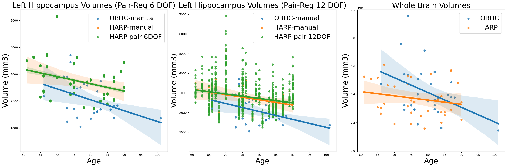
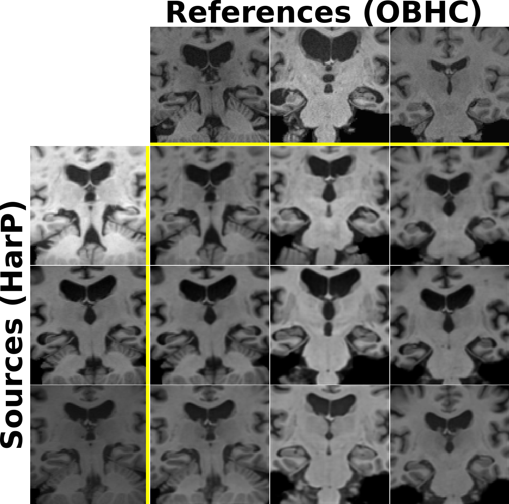
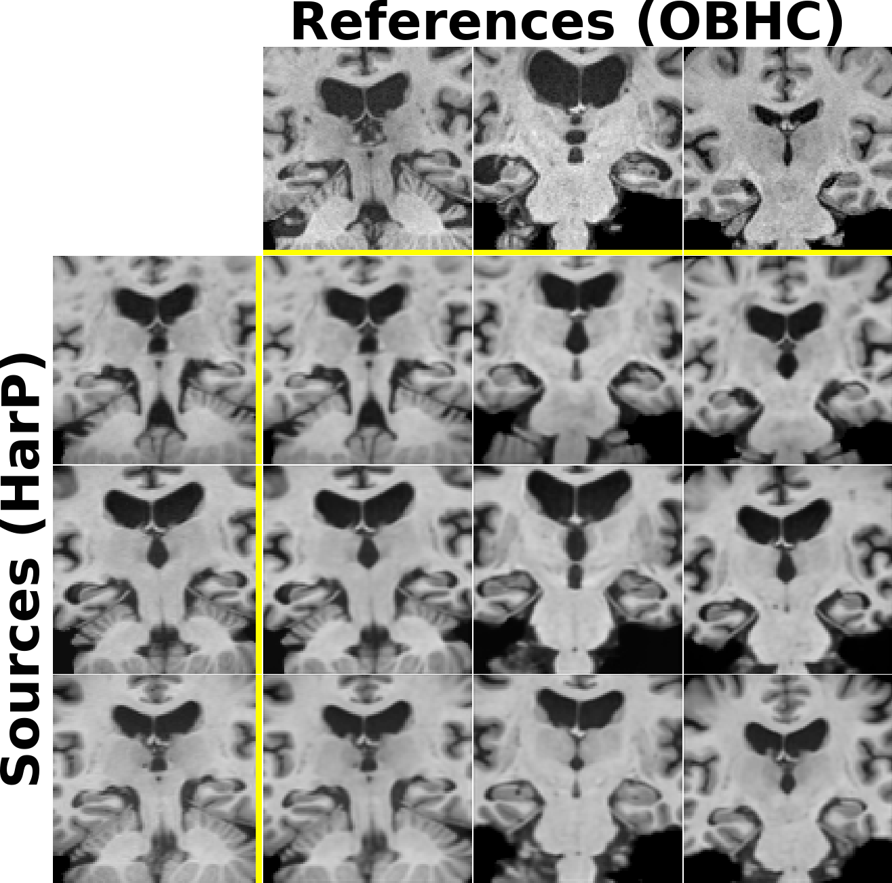
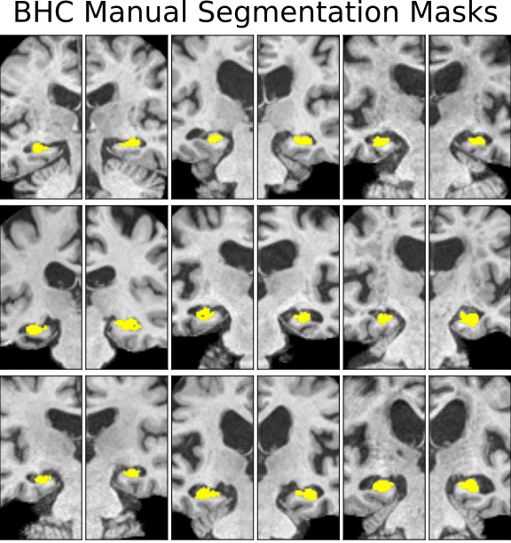
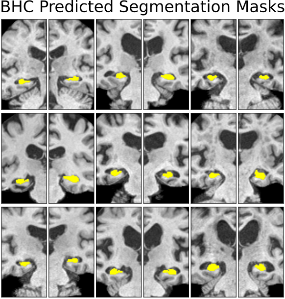

MICCAI Workshop on Machine Learning in Clinical Neuroimaging · 2024
Is Your Style Transfer Doing Anything Useful?
An Investigation into Hippocampus Segmentation and the Role of Preprocessing
Machine Learning in Clinical Neuroimaging (MLCN 2024), LNCS 15266, pp. 155–165. Published 2025.
Abstract
Brain atrophy assessment in MRI, particularly of the hippocampus, is commonly used to support diagnosis and monitoring of dementia. Consequently, there is a demand for accurate automated hippocampus quantification. Most existing segmentation methods have been developed and validated on research datasets and, therefore, may not be appropriate for clinical MR images and populations, leading to potential gaps between dementia research and clinical practice. In this study, we investigated the performance of segmentation models trained on research data that were style-transferred to resemble clinical scans. Our results highlighted the importance of intensity normalisation methods in MRI segmentation, and their relation to domain shift and style-transfer. We found that whilst normalising intensity based on min and max values, commonly used in generative MR harmonisation methods, may create a need for style transfer, Z-score normalisation effectively maintains style consistency, and optimises performance. Moreover, we show for our datasets spatial augmentations are more beneficial than style harmonisation. Thus, emphasising robust normalisation techniques and spatial augmentation significantly improves MRI hippocampus segmentation.
Motivation
Automated hippocampus segmentation is an important component of MRI-based assessment of neurodegenerative diseases, including Alzheimer's disease.
However, models trained on research datasets often struggle when applied to clinical MRI scans because of differences in acquisition protocols, scanner characteristics, and patient populations.
Generative style transfer has been proposed as a way of harmonising images across domains. But does this additional complexity genuinely improve segmentation, or can careful preprocessing achieve comparable results?
We investigate this question by systematically examining the effects of intensity normalisation, spatial registration, and style transfer on downstream hippocampus segmentation.

Comparison of hippocampal volumes between the HarP research dataset and the Oxford Brain Health Clinic population under different registration approaches.
Proposed Method
We investigate a two-stage pipeline for adapting hippocampus segmentation models from labelled research MRI data to unlabelled clinical MRI data.
01
Style Transfer
A Style-Encoding GAN (SE-GAN) generates source images that resemble the appearance of target clinical MRI scans.
02
Segmentation
A 3D U-Net is trained using the transformed source images and their corresponding hippocampal segmentation labels.
03
Preprocessing Analysis
We compare Min-Max and Z-score intensity normalisation, along with standard-space registration and paired spatial registration.

A schematic of the proposed 2-stage pipeline.
Intensity Normalisation
We investigate whether differences in intensity normalisation influence the apparent benefits of generative style transfer. In particular, we compare Min-Max normalisation with per-subject Z-score normalisation.
Spatial Registration
We compare registration to a common MNI reference space with paired registration, where source images are individually registered to target images to introduce additional anatomical variation.
Experimental Setup
Experiments were conducted using two brain MRI datasets representing research and clinical populations.
HarP — Research Dataset
The HarP dataset contains 135 T1-weighted MRI volumes from cognitively normal controls, individuals with mild cognitive impairment, and patients with Alzheimer's disease, with corresponding hippocampal annotations.
OBHC — Clinical Dataset
The Oxford Brain Health Clinic dataset contains 29 patients referred to a memory clinic. Clinical hippocampal annotations were used for evaluation, not for training the adaptation model.
Quantitative Results
Our experiments show that appropriate preprocessing substantially improves segmentation performance on clinical MRI data, reducing the additional benefits of generative style transfer.
HarP → OBHC
Average Dice Score
HarP → OBHC
Average Dice Score
Average Dice Score
Normalisation vs. Style Transfer
Z-score normalisation improves segmentation performance compared with Min-Max normalisation, achieving a Dice score of 0.746 without style transfer.
When Z-score normalisation is used, style transfer provides relatively limited additional improvements, suggesting that some apparent style differences can be addressed through appropriate preprocessing.
Spatial Augmentation
Paired affine registration improves performance to a Dice score of 0.780 without style transfer, compared with 0.787 when style transfer is also applied.
The best-performing configuration, combining paired registration, style transfer, and standard augmentation, achieves an average Dice score of 0.797.
| Train Data | Train N | Norm | Min DSC ↑ | Avg DSC ↑ | 95% HD ↓ | RAV ↓ |
|---|---|---|---|---|---|---|
| OBHC | 40 | Z-score | 0.617 | 0.744±0.016 | 3.865±1.357 | 18.388±1.694 |
| HarP | 64 | Min-Max | 0.480 | 0.616±0.037 | 5.264±0.970 | 97.972±9.456 |
| MNI-Reg-6 ST | 1,280 | Min-Max | 0.521 | 0.651±0.015 | 4.036±0.06 | 83.033±2.037 |
| HarP | 64 | Z-score | 0.674 | 0.746±0.009 | 6.013±1.297 | 26.326±1.856 |
| MNI-Reg-6 ST | 1,280 | Z-score | 0.688 | 0.757±0.008 | 5.072±1.391 | 20.736±1.906 |
| Paired-Reg-12 | 1,280 | Z-score | 0.703 | 0.780±0.005 | 3.452±0.237 | 20.009±0.913 |
| Paired-Reg-12 ST | 1,280 | Z-score | 0.672 | 0.787±0.004 | 3.169±0.250 | 23.794±4.033 |
| Paired-Reg-12 ST + Aug | 1,280 | Z-score | 0.719 | 0.797±0.003 | 3.133±0.143 | 27.509±3.724 |
Qualitative Results
Visual comparisons of style-transferred images reveal that Min-Max normalisation produces more pronounced changes in image appearance.
In contrast, Z-score normalisation produces more consistent intensity distributions, reducing the visible effect of style transfer.

(a) Min-Max Normalisation

(b) Z-score Normalisation
Figure 3. Generated style-transferred MRI images for a given source (first column) and reference (first row), comparing (a) Min-Max and (b) Z-score normalisation.
Qualitative segmentation results demonstrate the ability of the best-performing model to delineate hippocampal structures in clinical MRI scans.

(a) Manual Segmentation

(b) Predicted Segmentation
Figure 4. Comparison of manually annotated ground truth hippocampus segmentation masks and predicted segmentation masks on the Oxford Brain Health Clinic (OBHC) test dataset.
Conclusion
Our findings demonstrate the importance of carefully evaluating preprocessing choices when developing domain adaptation methods for medical image segmentation.
In particular, Z-score normalisation substantially reduces intensity-related domain shift, limiting the additional benefits of generative style transfer.
Spatial augmentation through paired affine registration provides further improvements by increasing anatomical diversity in the training data.
These results suggest that robust intensity normalisation and appropriate spatial augmentation should be prioritised when developing generalisable hippocampus segmentation models for clinical applications.
Citation
If you find this work useful, please cite our paper:
@inproceedings{kalabizadeh2024style,
title={Is Your Style Transfer Doing Anything
Useful? An Investigation into
Hippocampus Segmentation and
the Role of Preprocessing},
author={Kalabizadeh, Hoda and
Griffanti, Ludovica and
Yeung, Pak-Hei and
Voets, Natalie and
Gillis, Grace and
Mackay, Clare and
Namburete, Ana I. L. and
Dinsdale, Nicola K. and
Kamnitsas, Konstantinos},
booktitle={Machine Learning in
Clinical Neuroimaging},
pages={155--165},
year={2025},
publisher={Springer},
doi={10.1007/978-3-031-78761-4_15}
}